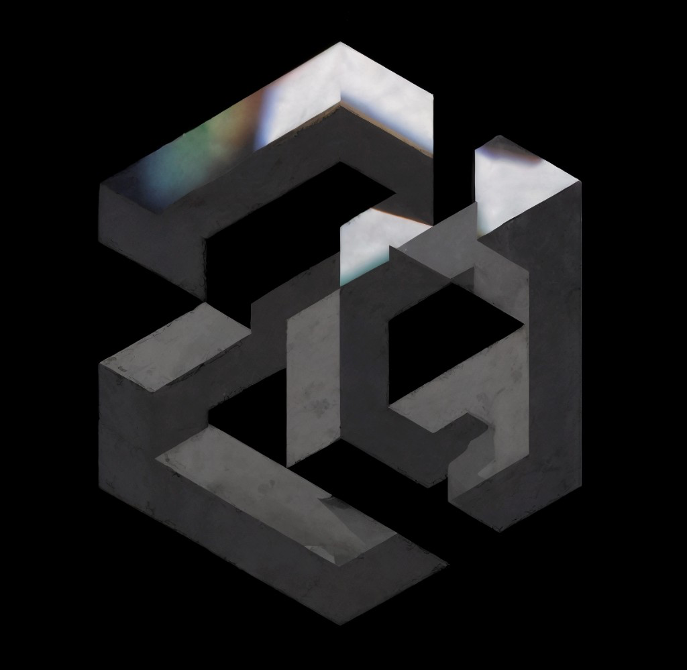

The notebook is blue.
Catering is at noon.
superseded lines stay

AngularAI Installangularai 0.1.0 · a cortex on disk · 2026
The notebook is blue.
Catering is at noon.
superseded lines stay
notebook 1
catering 0
word overlap
2026
budget 2000
| sent | The notebook is blue. |
| unsent | Catering is at noon. |
| reply | The notebook is blue. |
Value lock held this reply.
the held text is not stored
the call
A model answers inside one call. When the call ends, that window is gone. AngularAI does not grow the window, and it does not change the vendor’s weights.
the file
AngularAI sits in front of the API you already use. Each call is packed to a fixed budget. What the agent has learned stays in a file on the machine that asked. It can work a directory too, one tool a pass, still inside that budget. The plasticity is the cortex.
Traces and episodes. A superseded line stays in the file and leaves the workspace. A failed call writes the episode and no traces.
Four ASCII characters to one token. A wide character (CJK, kana, Hangul, fullwidth) is one; one above U+FFFF, like most emoji, is two. Any other character is half. Rounded up. AngularAI enforces that estimate. The file may outgrow it. The call may not.
A phrase you forbid, or a secret in the reply, holds it. You see one sentence. The held text is not stored. A secret in the input is refused before the call.
one pass
| asked | What color is the notebook? |
| found | The notebook is blue. |
| missed | What shade is it? |
Lexical attention. Paraphrase waits.
curl -fsSL https://angularai-hq.github.io/AngularAI/install.sh | sh
Then wire the API you already have. The key stays in the environment.
No. It is a cortex in front of a model API. OpenAI, Anthropic, or a compatible endpoint. The vendor’s weights do not change.
A workspace that fits the budget: the traces and episodes that share words with the question, and nothing else. The rest stays on disk.
In ~/.angularai/default, readable only by you. The key is not a field in the cortex.
No. /clear clears the screen. The cortex stays on disk.
“What color is the notebook?” finds “The notebook is blue.” “What shade is it?” does not, until a later version embeds traces.